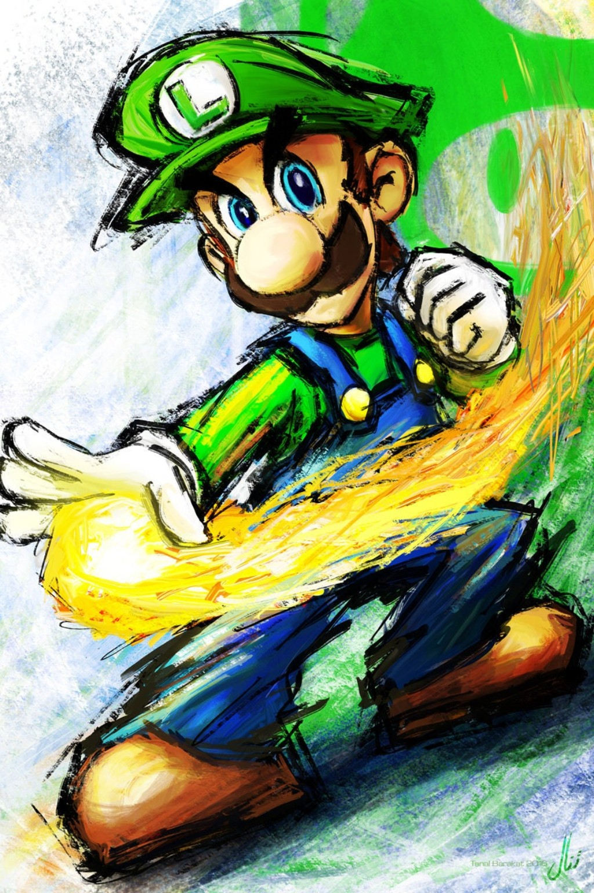

Luigi - The Unsung Hero of the Mushroom Kingdom

Luigi, in all his green glory, ready to leap into action with heart and courage
Luigi Mario, often overshadowed by his more famous brother, is a courageous and loyal adventurer. From haunted mansions to kart circuits, Luigi's humility, bravery, and quirky personality have earned him a dedicated fanbase. Whether he's vacuuming ghosts or saving the day, Luigi proves that heroes don't always wear red.